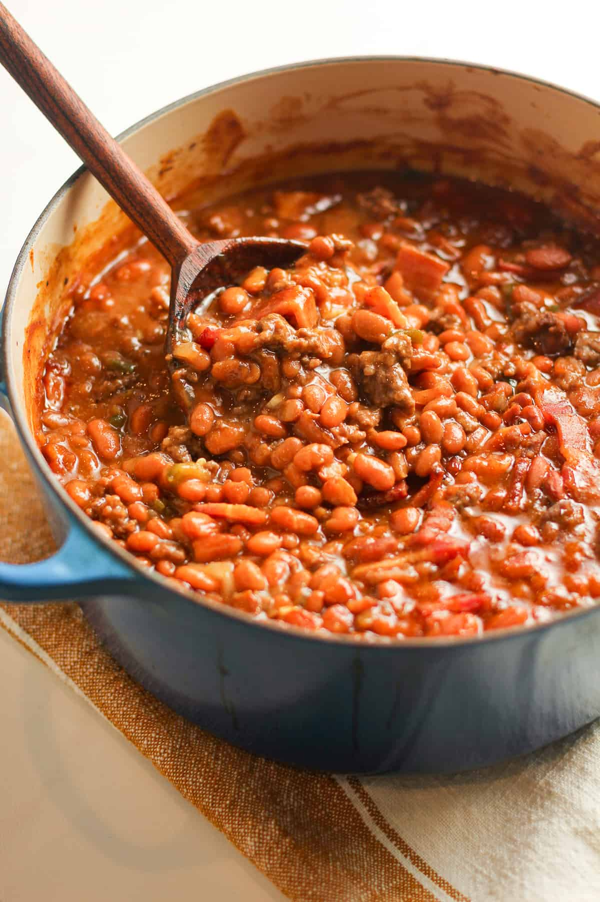

Cowboy Baked Beans

Here is a picture of the finished product
Ingredients list:
- 6 slices, thick cut bacon
- 1 (26 oz) can Ranch Style or Chili Beans
- 1 (28 oz) can Pork ‘n Beans
- 1 (7 oz.) can chipotle peppers in adobo sauce, chopped
- 1 medium yellow onion, chopped
- 1 - 1 ½ tablespoons yellow mustard
- 1 ½ - 2 cups light brown sugar
- 1/2-1 cup BBQ sauce
Steps
- Cut the bacon into 1-inch pieces. Add to a skillet and cook over medium-high heat
until about ¾ done. Set aside.
- Using a colander, drain the juices from the beans. Add to a 12-inch Dutch oven.
- Stir in the chipotle peppers, to taste. Stir in the onion, mustard and brown sugar
and BBQ. Adjust taste, if needed.
- Cook over coals until the mixture reaches a boil, let simmer a few additional minutes
and the mixture thickens just slightly. Serve warm with a slotted spoon.